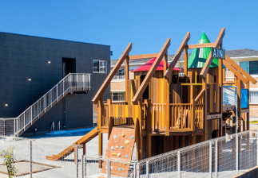
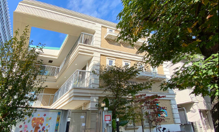

【目黒区近辺の人気保育園TOP3】
本日頂いた非公開のお勧め求人をピックアップしました！

園名：非公開 （残枠1名）
勤務地
東京都目黒区
月給
308,300 円〜
賞与
前年実績 2.15ヶ月分
年間休日
129 日
おすすめ情報を閲覧したい方は、以下をタップすると表示されます！
- ★ 経験に応じた給与体系で月給28.8万円〜の高待遇！残業代も別途支給され、頑張りがしっかり評価されます。
- ★ 年間休日129日とお休みが充実！リフレッシュ休暇や誕生日休暇もあり、プライベートの時間を大切にできます。
- ★ 敷金・礼金等の初期費用から家賃まで、上限なしの全額法人負担となる手厚い借り上げ社宅制度があります。
- ★ 給食費補助や退職金制度など福利厚生が充実。Web面接1回のスピーディーな選考も魅力の求人です。

園名：非公開 （残枠1名）
勤務地
東京都目黒区
月給
305,700 円〜
賞与
前年実績 558,500円〜
年間休日
125 日
おすすめ情報を閲覧したい方は、以下をタップすると表示されます！
- ★ 年間休日125日＆残業月平均7時間！しっかり休めて持ち帰り仕事もないため、無理なく長く働ける環境です。
- ★ 引越し初期費用補助（上限20万円）や上限9.5万円の借り上げ社宅制度があり、新生活を全力でサポート！
- ★ 充実した各種研修制度や海外研修、キャリアパスサポートがあり、保育士としてのスキルアップを目指せます。
- ★ メンタルヘルスカウンセリングやクラブ活動など、職員の心身の健康とコミュニケーションを大切にしています。

園名：非公開 （残枠2名）
勤務地
東京都目黒区
月給
264,456 円〜
賞与
前年実績 3.5ヶ月分＋年度末一時金
年間休日
120 日
おすすめ情報を閲覧したい方は、以下をタップすると表示されます！
- ★ 賞与は前年実績3.5ヶ月分に加え、年度末一時金（20万円〜）も支給！日々の努力が収入に還元されます。
- ★ 定着率90%以上！職員同士の仲が良く、働きやすい環境づくりに力を入れているため長く安心して働けます。
- ★ 有給休暇や年6日のリフレッシュ休暇があり、オンオフのメリハリをつけてしっかり休める年間休日120日です。
- ★ 「考えさせるを、考える」を保育方針とし、子どもたちの主体性や自律心を育む、あたたかい保育を実践しています。
気になった求人はありましたか？
今回の求人の詳細や、面接・見学のご相談につきましては、
専任のキャリアアドバイザー（CA）がLINEにて個別にご案内いたします。
ぜひお気軽に友だち追加をしてメッセージをお送りください！
※上記求人以外の求人をご希望の際もお気軽にご連絡ください。